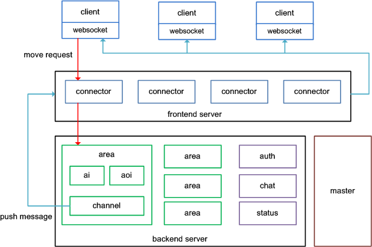
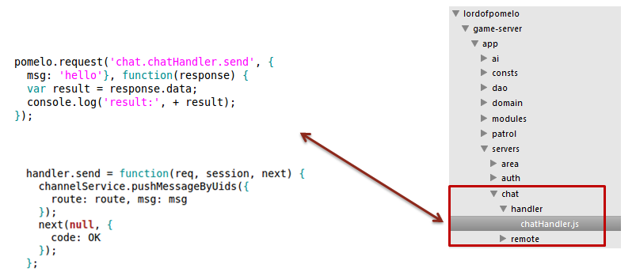

一个真正高可扩展的游戏运行架构必须是多进程的。google的gritsgame, mozilla的browserquest 都采用了node.js作为游戏服务器开发语言， 但它们都采用了单进程的node.js服务器，缺乏扩展性，这使它们可以支撑的在线用户数量是很有限的（这两个游戏主要是作为HTML5游戏的demo）。而多进程的架构可以很好的实现游戏服务器的的扩展性，达到支撑较多在线用户、降低服务器压力等要求。
游戏服务器的运行架构
一个典型的多进程MMO运行架构， 如下图所示：
一些说明：
- 上图中的方块表示进程， 定义上等同于“服务器”;
- 客户端通过websocket长连接连到connector服务器群;
- connector负责承载连接，并把请求转发到后端的服务器群;
- 后端的服务器群主要包括按场景分区的场景服务器(area)、聊天服务器(chat)和状态服务器(status)等， 这些服务器负责各自的业务逻辑。真实的案例中还会有各种其它类型的服务器;
- 后端服务器处理完逻辑后把结果返回给connector， 再由connector服务器broadcast/response回给客户端;
- master负责统一管理这些服务器，包括各服务器的启动、监控和关闭等功能。
pomelo的框架介绍
pomelo架构组成
pomelo框架的组成如图所示：
下面对架构图的一些说明:
- server management
pomelo是个真正多进程、分布式的游戏服务器。因此各游戏server(进程)的管理是pomelo很重要的部分，框架通过抽象使服务器的管理非常容易。server management 部分维护服务器的监控信息，对服务器进行管理等功能;
- network
pomelo中的通信，包括服务器与客户端的通信，也包括服务器群中各个服务器进程之间的通信，也就是服务器间的rpc调用。请求、响应、广播、rpc、session管理等构成了整个游戏框架的脉络，所有游戏流程都构建在这个脉络上。
- application
应用的定义、component管理、上下文配置，这些使pomelo framework的对外接口很简单， 并且具有松耦合、可插拔架构。
pomelo的架构设计目标
- 服务器（进程）的抽象与扩展
在web应用中， 每个服务器是无状态、对等的， 开发者无需通过框架或容器来管理服务器。 但游戏应用不同， 游戏可能需要包含多种不同类型的服务器，每类服务器在数量上也可能有不同的需求。这就需要框架对服务器进行抽象和解耦，支持服务器类型和数量上的扩展。
- 客户端的请求、响应、广播
客户端的请求、响应与web应用是类似的， 但框架是基于长连接的， 实现模式与http请求有一定差别。 广播是游戏服务器最频繁的操作， 需要方便的api， 并且在性能上达到极致。
- 服务器间的通讯、调用
尽管框架尽量避免跨进程调用，但进程间的通讯是不可避免的， 因此需要一个方便好用的rpc框架来支撑。
- 松耦合、可插拔的应用架构。
应用的扩展性很重要，pomelo framework支持以component的形式插入任何第三方组件, 也支持加入自定义的路由规则， 自定义的filter，自定义admin module等。
下面分别对这些目标进行分析：
服务器（进程）的抽象与扩展介绍
服务器的抽象与分类
该架构把游戏服务器做了抽象， 抽象成为两类：前端服务器和后端服务器， 如图：

前端服务器(frontend)的职责：
- 负责承载客户端请求的连接
- 维护session信息
- 把请求转发到后端
- 把后端需要广播的消息或响应发送到客户端
后端服务器(backend)的职责：
- 处理业务逻辑， 包括RPC和前端请求的逻辑
- 把消息推送回前端或者将对客户端请求的响应发送到前端服务器
服务器的鸭子类型
动态语言的面向对象有个基本概念叫鸭子类型。 服务器的抽象也同样可以比喻为鸭子， 服务器的对外接口只有两类， 一类是接收客户端的请求， 叫做handler， 一类是接收RPC请求， 叫做remote， handler和remote的行为决定了服务器长什么样子。 因此我们只要定义好handler和remote两类的行为， 就可以确定这个服务器的类型。
服务器抽象的实现
利用目录结构与服务器对应的形式， 可以快速实现服务器的抽象。
以下是示例图：

图中的connector, area, chat三个目录代表三类服务器类型， 每个目录下的handler与remote决定了这个服务器的行为（对外接口）。 开发者只要往handler与remote目录填代码， 就可以实现某一类的服务器。这让服务器实现起来非常方便。 让服务器动起来， 只要填一份配置文件servers.json就可以让服务器快速动起来。 配置文件内容示例如下：
{
"development":{
"connector": [
{"id": "connector-server-1", "host": "127.0.0.1", "port": 3150, "clientPort":3010, "frontend":true},
{"id": "connector-server-2", "host": "127.0.0.1", "port": 3151, "clientPort":3011, "frontend":true}
],
"area": [
{"id": "area-server-1", "host": "127.0.0.1", "port": 3250, "area": 1},
{"id": "area-server-2", "host": "127.0.0.1", "port": 3251, "area": 2},
{"id": "area-server-3", "host": "127.0.0.1", "port": 3252, "area": 3}
],
"chat":[
{"id":"chat-server-1","host":"127.0.0.1","port":3450}
]
}
}客户端请求与响应、广播的抽象介绍
所有的web应用框架都实现了请求与响应的抽象。尽管游戏应用是基于长连接的， 但请求与响应的抽象跟web应用很类似。 下图的代码是一个request请求示例：
请求的api与web应用的ajax请求很象，基于convention over configuration的原则， 请求不需要任何配置。 如下图所示，请求的route字符串：chat.chatHandler.send， 它可以将请求分发到chat服务器上chatHandler文件定义的send方法。
pomelo的框架里还实现了对request的filter机制，广播/组播机制，以及Channel的支持等，更详细的内容可以参考后面的开发指南部分的相关内容。
服务器间rpc调用的抽象介绍
架构中各服务器之间的通讯主要是通过底层rpc框架来完成的，该rpc框架主要解决了进程间消息的路由和rpc底层通讯协议的选择两个问题。 服务器间的rpc调用也实现了零配置。实例如下图所示：

上图的remote目录里定义了一个rpc接口： chatRemote.js，它的接口定义如下：
chatRemote.kick = function(uid, player, cb) {
}其它服务器（RPC客户端）只要通过以下接口就可以实现rpc调用：
app.rpc.chat.chatRemote.kick(session, uid, player, function(data){
});这个调用会根据特定的路由规则转发到特定的服务器。（如场景服务的请求会根据玩家在哪个场景直接转发到对应的server）。rpc框架目前在底层采用socket.io作为通讯协议，但协议对上层是透明的，以后可以替换成任意的协议。
可插拔的component扩展架构
component是pomelo的核心，pomelo的核心功能都是由component完成，开发者可定制自己的component，并加载到框架中，以完成其功能。component在开发指南部分将有更深入的讨论。 以下是component的生命周期图：

用户只要实现component相关的接口： start, afterStart, stop, 就可以加载自定义的组件：
app.load([name], comp, [opts])总结
在本部分，讲述了pomelo框架的整体架构，以及其设计目标。pomelo框架完成了对服务器的抽象，对用户请求响应以及服务器端主动推送消息的抽象，服务器间rpc调用的抽象，可插拔的components抽象。这些抽象使得pomelo非常灵活以及易于使用，易于扩展。